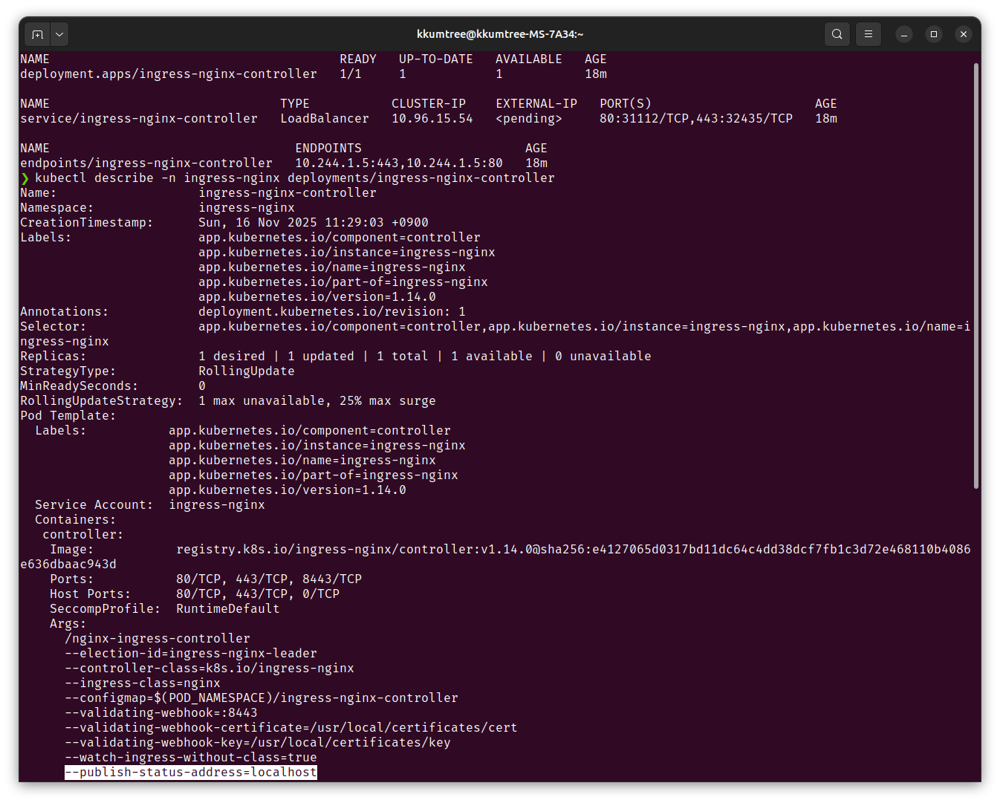
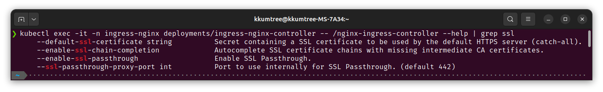
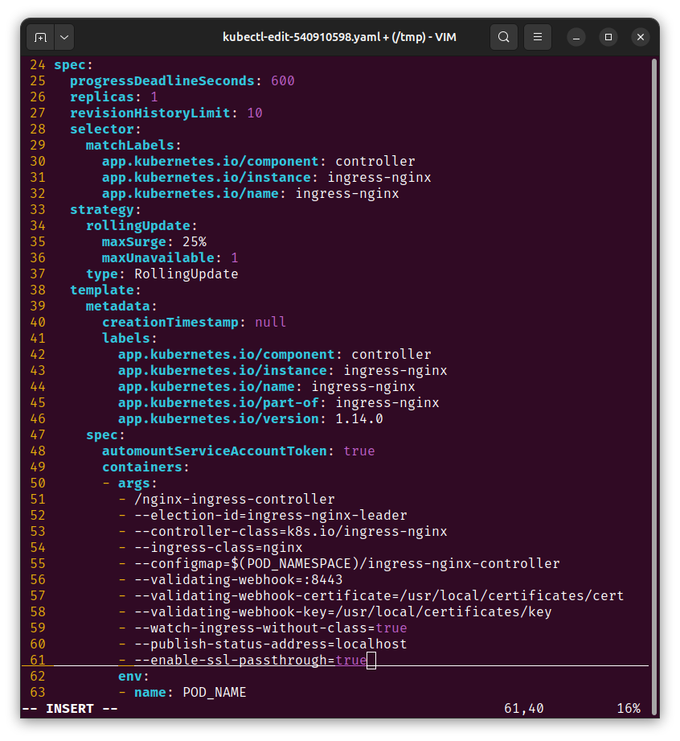
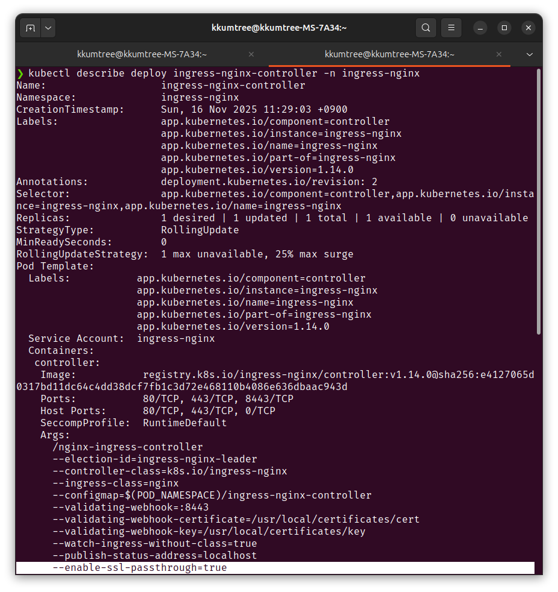
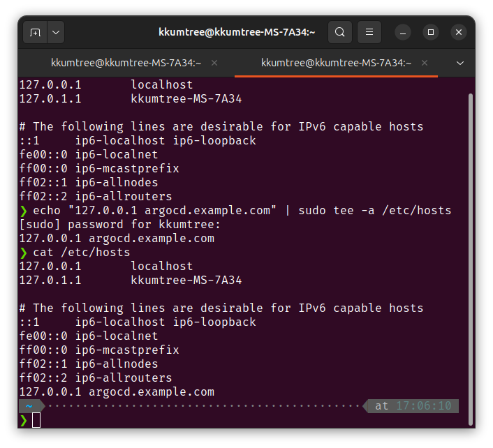
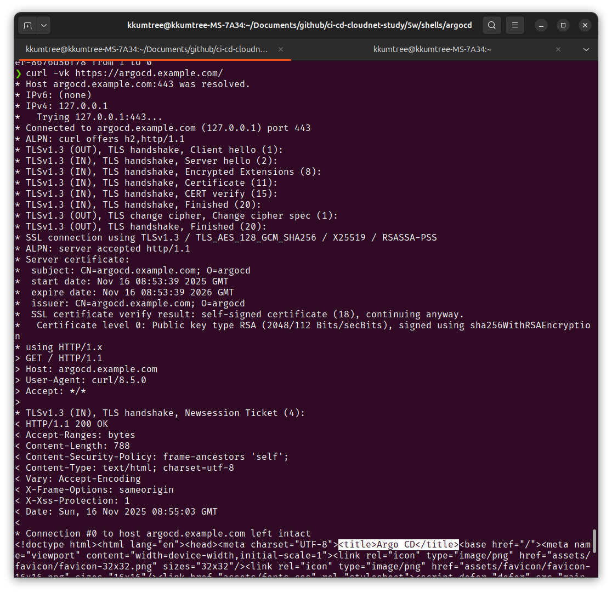
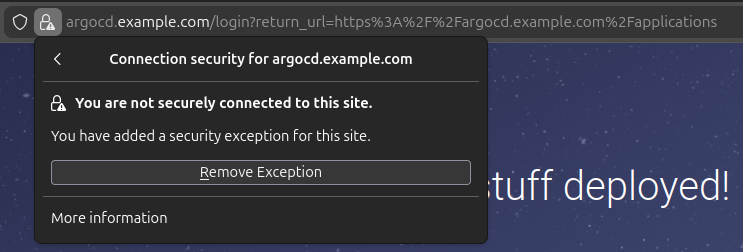
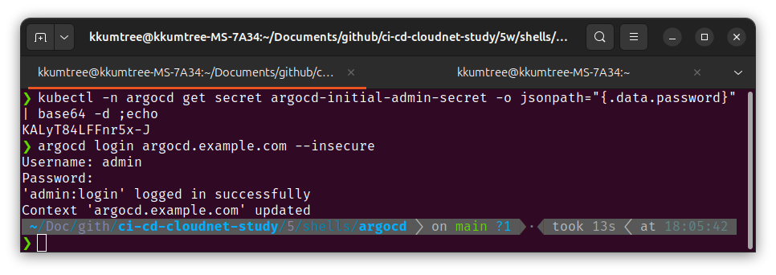
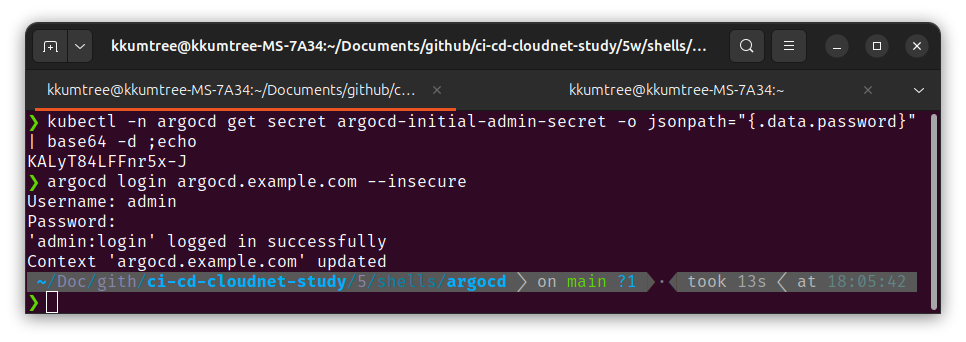

CloudNet@에서 진행하고 있는 CI/CD Study 5주차에는 ArgoCD를 좀더 다루었습니다.
0. 실습 준비
해당 구성들은 아래 GitHub에 탑재되어 있습니다. https://github.com/kkumtree/ci-cd-cloudnet-study 의 5w 폴더
우선 80/443 포트를 사용할 수 있는지 확인하여야합니다. 아닌 경우, 다른 포트를 사용해야합니다.
실제로 해보았을 경우 tailscale이 포트를 사용하는 것으로 오인하여 해당 서비스를 중지해보았습니다.
다만, 단순히 kind YAML을 잘못 작성한 것으로 보입니다.

(1) kind 및 kube-ops-view
이번에는 Ingress의 배포를 하기 위한 밑작업으로
Control Node에 라벨링을 진행합니다.
이는 다음에 이어질 ingress-nginx 배포 시, nodeSeletor 조건으로 사용합니다.
# 5w/shells/kind/up-kind.sh
kind: Cluster
apiVersion: kind.x-k8s.io/v1alpha4
# networking:
# apiServerAddress: "0.0.0.0"
nodes:
- role: control-plane
labels:
ingress-ready: true
extraPortMappings:
- containerPort: 80
hostPort: 80
protocol: TCP
- containerPort: 443
hostPort: 443
protocol: TCP
- containerPort: 30000
hostPort: 30000
- containerPort: 30001
hostPort: 30001
- containerPort: 30002
hostPort: 30002
- containerPort: 30003
hostPort: 30003
- role: worker
kube-ops-view의 경우에는, 기존과 같습니다.
# kube-ops-view
helm repo add geek-cookbook https://geek-cookbook.github.io/charts/
helm install kube-ops-view geek-cookbook/kube-ops-view --version 1.2.2 --set service.main.type=NodePort,service.main.ports.http.nodePort=30001 --set env.TZ="Asia/Seoul" --namespace kube-system
# kube-ops-view 접속 URL 확인
open "http://127.0.0.1:30001/#scale=2" # 배율 2x
사용자 라벨링 관련하여 문서가 갱신되어 지금은 확인하기가 어렵지만, 기존 문서(issues#2889/kind)에는 아래와 같이 Taint toleration(예외 처리, 허용)을 해주고, 노드에 사용자 라벨링하도록 안내되어 있었다고 합니다.
The manifests contains kind specific patches to forward the hostPorts to the ingress controller, set taint tolerations and schedule it to the custom labelled node.
(2) Ingress Nginx 배포
먼저 Control Node의 라벨을 확인하여, 지정한 사용자 라벨이 정상적으로 있는지 확인합니다.
kubectl get nodes myk8s-control-plane -o jsonpath={.metadata.labels} | jq
# {
# "beta.kubernetes.io/arch": "amd64",
# "beta.kubernetes.io/os": "linux",
# "ingress-ready": "true", # 이 값이 확인되어야 합니다.
# "kubernetes.io/arch": "amd64",
# "kubernetes.io/hostname": "myk8s-control-plane",
# "kubernetes.io/os": "linux",
# "node-role.kubernetes.io/control-plane": "",
# "node.kubernetes.io/exclude-from-external-load-balancers": ""
# }
이후, 배포를 진행합니다.
해당 YAML에는 kind 배포 시 열어두었던 80/443 포트를 활용하는 것을 확인하였고,
master 및 control-plane에 대한 taint toleration도 확인하였습니다.
(Deployment 항목) tolerations.[node-role.kubernetes.io/control-plane].effect=NoSchedule
kubectl apply -f https://raw.githubusercontent.com/kubernetes/ingress-nginx/main/deploy/static/provider/kind/deploy.yaml
ingress 컨트롤러에서 --publish-status-address=localhost 환경변수를 확인할 수 있습니다.

더불어, Control plane 내에서 IPTABLES도 확인해봅니다.
ingress-nginx 파드에 대한 엔드포인트 IP로 검색했을 때 전달되는 것을 확인하였습니다.

(3) SSL Passthrough flag 활성화
Argo CD의 경우 OpenSSL의 self-signed 인증서와 Secrets를 생성, 즉 자체 TLS 인증서를 쓰기 때문에
Nginx가 중간에서 TCP 프록시 처리를 하고 HTTPS 트래픽을 종료(TLS Termination)하여 too many redirects 오류가 발생합니다.
그래서 이 부분도 수정해두도록 하겠습니다.
# nginx-ingress-controller의 환경변수 체크
kubectl exec -it -n ingress-nginx deployments/ingress-nginx-controller -- /nginx-ingress-controller --help | grep ssl

# 에디터를 지정하여 수정 (vi, nano 등)
KUBE_EDITOR="vi" kubectl edit -n ingress-nginx deployments/ingress-nginx-controller
spec.template.spec.containers[controller].args에 추가

이후 Controller 파드의 환경변수 반영을 체크합니다.

1. TLS 활성화 ArgoCD 배포
방금까지 Client(Browser) -> Ingress -> ArgoCD 서버간 E2E HTTPS가 유지될 수 있는 상황을 만들었으니, 자체 TLS 인증서를 사용하는 ArgoCD를 배포해보겠습니다.
가상의 도메인으로 argocd.example.com로 정하고,
ArgoCD 서버 annotations에 force-ssl-redirect와 ssl-passthrough를 활성화하였습니다.
(1) 인증서 생성
5w/shells/argocd폴더 참조
9-create-local-crt.sh로 생성한, 인증서는openssl-crt-file폴더에 저장.
설치는deploy-chart.sh로 진행합니다.
(단, 이미지의 폴더명 openssl-tls-file 대신, openssl-x509-output으로 변경해두었습니다.)

# 5w/shells/argocd/argocd-values.yaml
global:
domain: argocd.example.com
# # TLS certificate configuration via cert-manager
# # cert-manager가 있을 때, 활용.
# certificate:
# enabled: true
server:
ingress:
enabled: true
ingressClassName: nginx
annotations:
nginx.ingress.kubernetes.io/force-ssl-redirect: "true"
nginx.ingress.kubernetes.io/ssl-passthrough: "true"
tls: true

더불어, /etc/hosts 파일도 수정하여, 임의의 도메인을 수정합니다.

이후에 제대로 되었는지 확인해봐야하는데, ArgoCD 배포 직후에는 바로 반영이 안되고 수 분이 소요됩니다.
( curl -vk https://argocd.example.com/ 활용)

웹 브라우저에서 접속을 해보면, 임의로 만들었기 때문에 경고가 나옵니다.

아래 명령어로 초기 패스워드를 얻고나서 접속해봅니다.
kubectl -n argocd get secret argocd-initial-admin-secret -o jsonpath="{.data.password}" | base64 -d ;echo
# KALyT84LFFnr5x-J
argocd login argocd.example.com --insecure
해당 URL로 웹 콘솔 접속도 잘되고, CLI로도 해당 도메인으로 접근이 잘 됩니다.
 

9. kind의 Ingress Controller(NGINX) 구성
이번 실습에서는 kind의 Control plane에 별도의 사용자 지정 라벨링을 하였으나,
kind 문서(Ingress/kind)에서는
k8s 공식 라벨 소개하는 2가지 방법이 있습니다.
특히, 라벨은 kubernetest의 알려진(Well-Known)라벨인 app.kubernetes.io/component을 활용하는 것을 확인하였습니다.
# Selector로 아래 라벨 활용 확인
# app.kubernetes.io/component=controller
kubectl wait --namespace ingress-nginx \
--for=condition=ready pod \
--selector=app.kubernetes.io/component=controller \
--timeout=90s
이후 두 방법을 요약하면, 아래와 같습니다.
(1) ingress-nginx-controller에 등록된 External IP의 이용
(관련 YAML파일 다운로드:https://kind.sigs.k8s.io/examples/ingress/deploy-ingress-nginx.yaml)
(2) kind 배포 시 Control plane에 80/443 포트(extraPortMappings)를 열고, localhost로 이용.
Reference

kkumtree
Source code on GitHub
© 2025 kkumtree and contributors All rights reserved.
Licensed under
CC BY-NC-ND 4.0